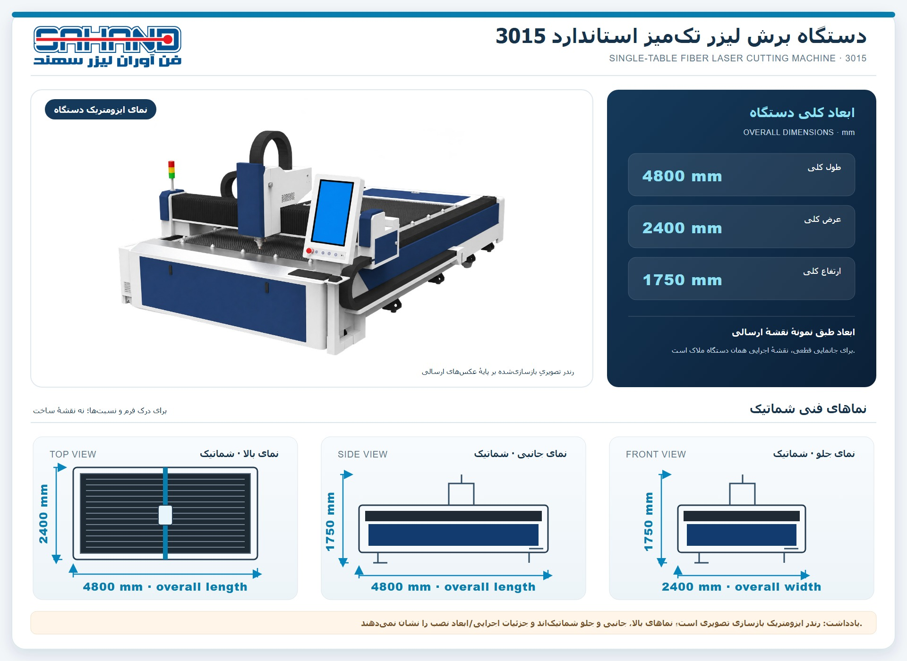

نقشهٔ ایزومتریک مرجع · ابعاد کلی کاتالوگ
دستگاه برش لیزر تکمیز استاندارد 3015
ابعاد درجشده: ۴۸۰۰ × ۲۴۰۰ × ۱۷۵۰ میلیمتر
مشاهده و دریافت نقشهٔ ایزومتریک و ابعادی · عکس مرجع دستگاه
نماهای فنی شماتیکاند؛ این برگه نقشهٔ ساخت یا اندازهبرداری دستگاه نصبشده نیست.